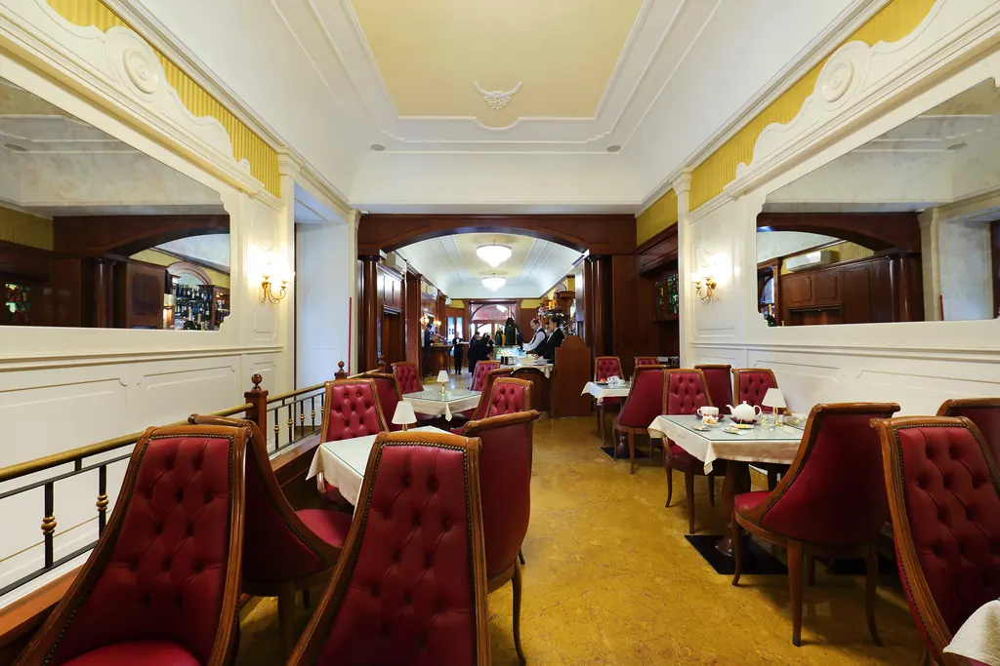

Contatti e orari
Siamo in Piazza Carità, nel centro di Napoli, lungo via Toledo. Aperti tutti i giorni, domenica compresa.
- Indirizzo
- Piazza Carità 14
80134 Napoli (NA) - Orari
- Tutti i giorni
dalle 6:30 alle 20:30 - Telefono
- 081 552 3488
- Cellulare e WhatsApp
- 328 438 8404
scrivici su WhatsApp

Come arrivare
- In metropolitana: Linea 1, fermate Toledo o Dante, a pochi minuti a piedi.
- A piedi: siamo lungo via Toledo, tra piazza Dante e piazza del Plebiscito, all'ingresso della Pignasecca e dei Quartieri Spagnoli.
- In auto: il centro è in gran parte zona a traffico limitato; conviene lasciare l'auto in un parcheggio e proseguire a piedi o con la metro.
Recensioni
Leggi cosa dicono di noi su Google e su Tripadvisor. Se sei stato da noi, lascia una recensione: ci aiuta a migliorare.
Social
Seguici su Instagram e Facebook.
Domande frequenti
Quali sono gli orari di Ceraldi Caffè?
Siamo aperti tutti i giorni, domenica compresa, dalle 6:30 alle 20:30.
Dove si trova il bar?
In Piazza Carità 14, nel centro di Napoli, lungo via Toledo e vicino alla Pignasecca. Le stazioni Toledo e Dante della metropolitana Linea 1 sono a pochi minuti a piedi.
Posso vedere il menu prima di venire?
Sì, il menu completo con prezzi è qui sul sito: apri il menu di Ceraldi Caffè. C'è anche il menu interattivo con filtro allergeni.
I dolci sono fatti da voi?
Sì. La pasticceria è di produzione propria, con ricette di famiglia tramandate di generazione in generazione: sfogliatelle, babà, pastiera, zeppole e le creazioni della casa.
Cosa posso mangiare a colazione?
La classica colazione all'italiana con croissant (vuoti, alla crema, al cioccolato, integrali, vegani), brioche, kranz e pain au chocolat, insieme ai dolci napoletani come sfogliatella, graffa e babà.
Fate anche l'aperitivo?
Sì, fino alle 20:30, con il nostro Aspritz fatto in casa, spritz, negroni, gin tonic, vini campani al calice e birre.
Si può pranzare?
Sì, con la rosticceria napoletana (frittatine, crocchè, pizza fritta), saltimbocca e panini, freselle e insalate.
Servite la colazione inglese?
Sì, tutte le mattine serviamo la Full English Breakfast: uova, bacon, salsicce, fagioli, funghi, pomodori, pane tostato e tè.
Come posso contattarvi?
Al telefono fisso 081 552 3488, al cellulare 328 438 8404 (anche WhatsApp) oppure su Instagram @ceraldicaffe.
Dove posso leggere le recensioni?
Su Google e su Tripadvisor, dove trovi le recensioni dei nostri clienti.
Dati aziendali
Ceraldi Group S.r.l.
Piazza Carità 14, 80134 Napoli (NA)
P. IVA 04523831214